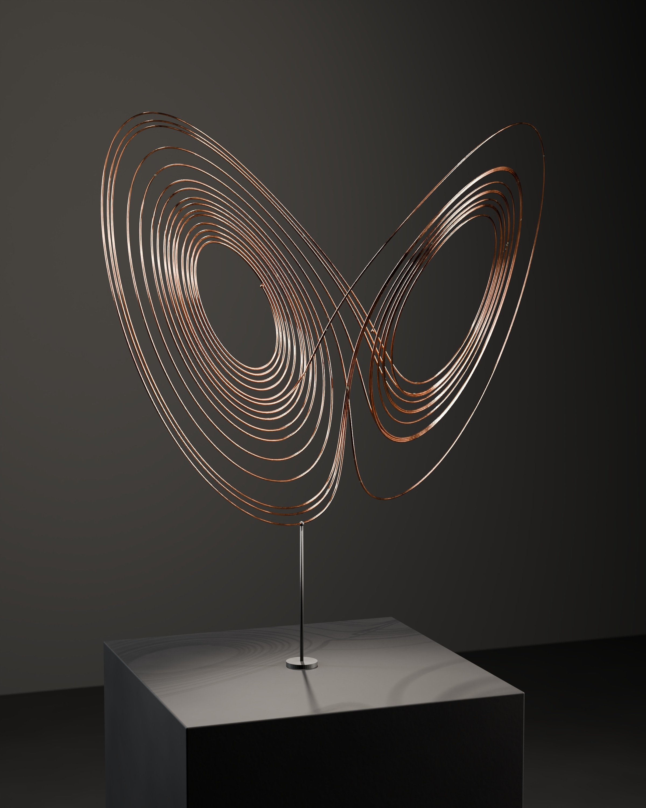
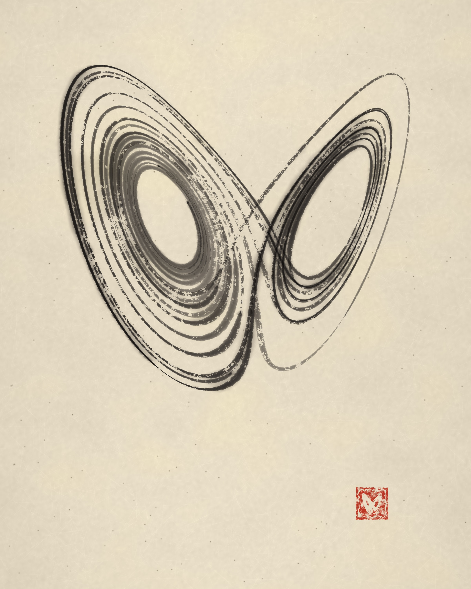
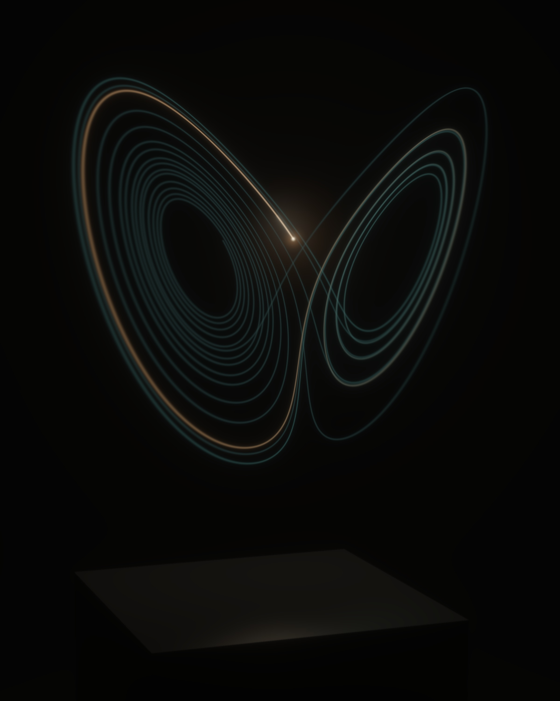

One Equation, Three Worlds
Matter · Trace · Energy



dx/dt = σ(y − x) dy/dt = x(ρ − z) − y dz/dt = xy − βz
σ = 10, ρ = 28, β = 8/3 · from (1, 1, 1) · DOP853, rtol = atol = 10⁻¹² · segment t = 8 → 27
One numerically integrated Lorenz trajectory, and nothing else, becomes three works. As matter it is all of its time at once: 27 metres of copper filament, frozen. As a trace it accumulates in the order it happened, brush stroke by brush stroke. As energy it is only ever the present, a moving light whose past fades behind it.
The segment ends at t = 27 because that is roughly where independent high-precision solvers begin to disagree: the horizon of prediction. The film does not loop; the light simply goes out there.
Full notes, dataset and source: README.